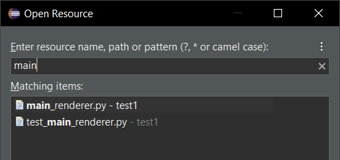
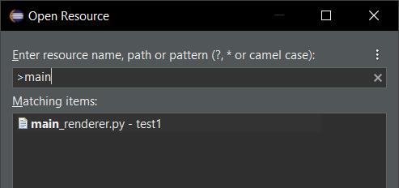

Here are descriptions of some of the more interesting or significant changes made to the Eclipse Platform for the 4.25 release of Eclipse. They are grouped into:
Plug-in developers will also be interested in the corresponding What's new document in the plug-in developer's guide.
We also recommend to read the Tips and Tricks.
Views, Dialogs and Toolbar |
|
| Open Resource dialog now defaults to "substring" search |
By default, the search pattern input to the Open Resource dialog is now searched
anywhere in the file name. That means you no longer need to input a leading asterisk ("*")
when searching from the middle of a file name.
 If you want to enforce the old behavior, where "prefix-matching" search is expected, simply add a leading angle bracket (">") to the search pattern.  |
Text Editors |
|
Preferences |
|
Themes and Styling |
|
General Updates |
|